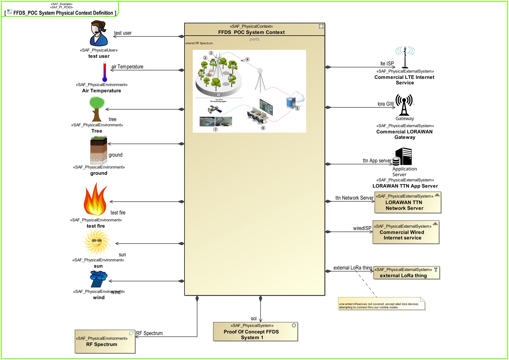
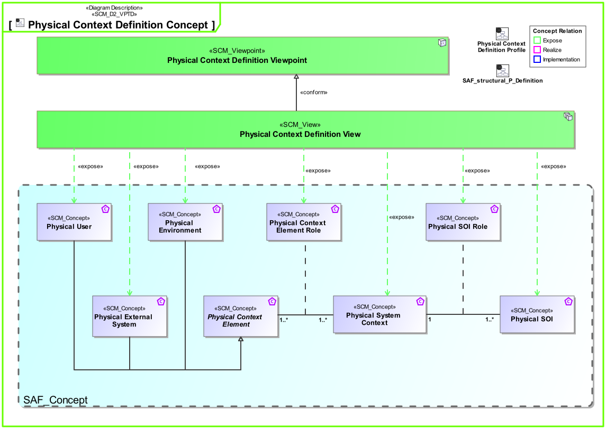
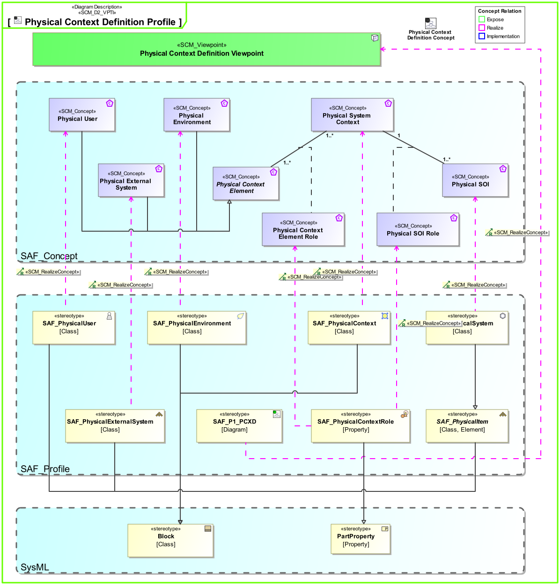

P1_PCXD Physical Context Definition Viewpoint
| Domain | Aspect | Maturity |
|---|---|---|
| Physical | Context & Exchange |

The Physical Context Definition Viewpoint identifies the various contexts the SOI is used in, along with the associated external entities sharing a physical interface with the system. For each context, the applicable environmental conditions shall be defined. The physical context helps identify the interface requirements needed to integrate a system into its environment in a given context.
The Physical Context Definition Viewpoint supports the “Design Definition Process” activities of the INCOSE SYSTEMS ENGINEERING HANDBOOK 2023 [§2.3.5.5] and contributes to the artifacts “System Design Description” and “System Interface Definition”.
A block definition diagram (BDD) depicting the elements available in a specific context. At least one BDD is used per identified context featuring
The following Stereotypes / Model Elements are used in the Viewpoint:
The Diagram shows the concepts exposed by the viewpoint, and related concepts if necessary.

| Concept | Documentation |
|---|---|
| Physical Context Element Role | Specifies the fact that a Physical Context Element exists in a given Physical System Context. |
| Physical Environment | The Physical Environment in the Physical Domain, outside the SOI scope, interacting with the SOI. E.g. air, dirt, sun, road. |
| Physical External System | The Physical External System in the Physical Domain, outside the SOI scope, interacting with the SOI. E.g. power grid, mobile network, fresh water system (in a house). |
| Physical SOI Role | Specifies the fact that a Physical SOI exists in a given Physical System Context. |
| Physical SOI | Represents the Physical SOI on Physical Level. |
| Physical System Context | Specifies the fact that a context for a System of Interest is defined on Physical Level. |
| Physical User | The Physical User is the representation for a human in the physical domain, outside the SOI scope, interacting with the SOI. |
The Diagram shows the implementation of exposed concepts.
